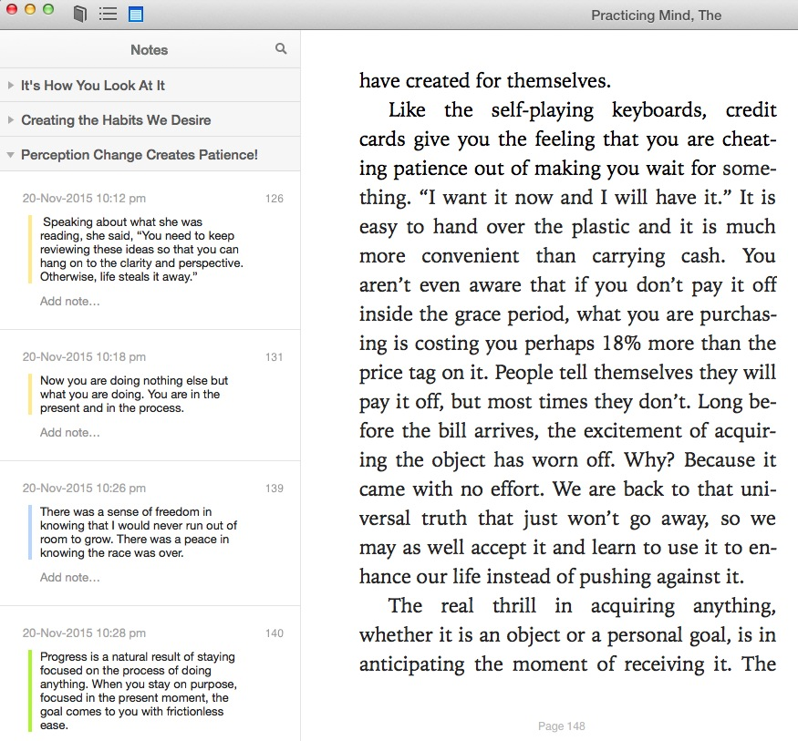

ibooks_highlights_export
Export all highlights in your iBooks library into html.
Screenshots


Usage
Simplest way to get your highlights:
$ python ibooks_highlights_exporter.py
$ browser output.html
Options
To get a list of available options, type this:
$ python ibooks_highlights_exporter.py --help